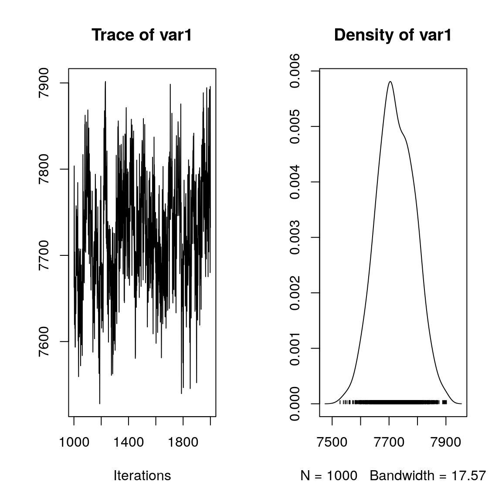

Warton et al. (2015)
#==============================================
# jSDM_probit_block()
# Example with simulated data
#==============================================
#=================
#== Load libraries
library(jSDM)
#> ##
#> ## jSDM R package
#> ## For joint species distribution models
#> ##
#==================
#== Data simulation
#= Number of sites
nsite <- 300
#= Set seed for repeatability
seed <- 1234
set.seed(seed)
#= Number of species
nsp<- 100
#= Number of latent variables
n_latent <- 2
#= Ecological process (suitability)
x1 <- rnorm(nsite,0,1)
x2 <- rnorm(nsite,0,1)
X <- data.frame(Int=rep(1,nsite),x1=x1,x2=x2)
W <- cbind(rnorm(nsite,0,1),rnorm(nsite,0,1))
data <- cbind (X,W)
beta.target <- t(matrix(runif(nsp*ncol(X),-2,2), byrow=TRUE, nrow=nsp))
l.zero <- 0
l.diag <- runif(2,0,2)
l.other <- runif(nsp*n_latent-3,-2,2)
lambda.target <- t(matrix(c(l.diag[1],l.zero,l.other[1],l.diag[2],l.other[-1]), byrow=T, nrow=nsp))
param.target <- rbind(beta.target,lambda.target)
Valpha.target <- 0.5
V <- 1
alpha.target <- rnorm(nsite,0,sqrt(Valpha.target))
probit_theta <- as.matrix(X) %*% beta.target + W %*% lambda.target + alpha.target
e <- matrix(rnorm(nsp*nsite,0,sqrt(V)),nsite,nsp)
Z_true <- probit_theta + e
visits <- matrix(1,nsite,nsp)
#comment on fait pour prendre en compte le nombre de visites ?
Y <- matrix (NA, nsite,nsp)
for (i in 1:nsite){
for (j in 1:nsp){
if ( Z_true[i,j] > 0) {Y[i,j] <- 1}
else {Y[i,j] <- 0}
}
}
#==================================
#== Site-occupancy model
mod_jSDM_probit_block <- jSDM_probit_block(
presence_site_sp=Y ,
site_suitability=~x1+x2,
site_data=X[,-1], n_latent=2,
burnin=1000, mcmc=1000, thin=1,
alpha_start=0, beta_start=0,
lambda_start=0, W_start=0,
V_alpha_start=1, shape=0.5, rate=0.0005,
mu_beta=0, V_beta=1.0E6,
mu_lambda=0, V_lambda=10,
seed=1234, verbose=1
)
#>
#> Running the Gibbs sampler. It may be long, please keep cool :)
#>
#> **********:10.0%
#> **********:20.0%
#> **********:30.0%
#> **********:40.0%
#> **********:50.0%
#> **********:60.0%
#> **********:70.0%
#> **********:80.0%
#> **********:90.0%
#> **********:100.0%
# ===================================================
# Result analysis
# ===================================================
#==========
#== Outputs
#= Parameter estimates
## alpha
summary(mod_jSDM_probit_block$mcmc.alpha)
#>
#> Iterations = 1001:2000
#> Thinning interval = 1
#> Number of chains = 1
#> Sample size per chain = 1000
#>
#> 1. Empirical mean and standard deviation for each variable,
#> plus standard error of the mean:
#>
#> Mean SD Naive SE Time-series SE
#> [1,] 0.7112092 0.2367 0.007485 0.02732
#> [2,] 0.7798617 0.1806 0.005711 0.01382
#> [3,] -1.7263508 0.2352 0.007438 0.02454
#> [4,] 0.4983831 0.2628 0.008312 0.03072
#> [5,] 0.2922482 0.1684 0.005326 0.01142
#> [6,] 0.1389549 0.1817 0.005746 0.01373
#> [7,] 1.2852397 0.2313 0.007314 0.02302
#> [8,] 1.4709299 0.3271 0.010345 0.04544
#> [9,] 0.1940570 0.1899 0.006006 0.01724
#> [10,] -0.0453985 0.1930 0.006104 0.01773
#> [11,] 1.0372201 0.2191 0.006928 0.01978
#> [12,] -0.0748733 0.1955 0.006182 0.01615
#> [13,] -0.3831401 0.1821 0.005760 0.01394
#> [14,] -0.0344876 0.1776 0.005617 0.01222
#> [15,] 0.6282416 0.2265 0.007163 0.02410
#> [16,] 1.5815407 0.2070 0.006546 0.01845
#> [17,] -0.7506706 0.2676 0.008463 0.03250
#> [18,] -1.7637840 0.2670 0.008444 0.03145
#> [19,] -0.0282900 0.1645 0.005202 0.01069
#> [20,] -0.8870776 0.2333 0.007378 0.02474
#> [21,] 0.6854671 0.2332 0.007376 0.02542
#> [22,] 0.1718429 0.1791 0.005663 0.01443
#> [23,] 0.3059207 0.1891 0.005981 0.01575
#> [24,] -0.5561143 0.2205 0.006974 0.02192
#> [25,] -0.1311188 0.2028 0.006412 0.01787
#> [26,] -0.6346780 0.2685 0.008491 0.03233
#> [27,] 0.0500161 0.1972 0.006236 0.01925
#> [28,] -0.2141633 0.2150 0.006800 0.01943
#> [29,] 1.0091559 0.2360 0.007462 0.02371
#> [30,] 1.4102651 0.2154 0.006812 0.02013
#> [31,] 0.6913391 0.2236 0.007072 0.02366
#> [32,] -0.3199095 0.1900 0.006007 0.01739
#> [33,] -1.5112070 0.2451 0.007752 0.02664
#> [34,] -0.8662857 0.2010 0.006356 0.01633
#> [35,] -1.5634100 0.2730 0.008632 0.03401
#> [36,] -0.7830944 0.2548 0.008058 0.03443
#> [37,] 0.6374453 0.2225 0.007037 0.02072
#> [38,] -0.0895631 0.2540 0.008032 0.02825
#> [39,] 0.4857392 0.1883 0.005955 0.01788
#> [40,] 1.1431751 0.2388 0.007552 0.02464
#> [41,] -1.3354466 0.2542 0.008038 0.02755
#> [42,] -0.6238763 0.2163 0.006840 0.02030
#> [43,] 0.4374857 0.2018 0.006382 0.02005
#> [44,] 0.4062074 0.1978 0.006256 0.01785
#> [45,] -0.8801070 0.1783 0.005638 0.01305
#> [46,] 0.5616881 0.2006 0.006345 0.01807
#> [47,] -0.0022152 0.1956 0.006186 0.01634
#> [48,] -1.1476052 0.2290 0.007241 0.02150
#> [49,] -0.0092320 0.2009 0.006354 0.02251
#> [50,] -0.0021095 0.1659 0.005247 0.01111
#> [51,] 0.4339760 0.2633 0.008325 0.03309
#> [52,] -0.5839746 0.1848 0.005844 0.01486
#> [53,] -0.7770472 0.1879 0.005942 0.01410
#> [54,] -0.6667019 0.2168 0.006857 0.02484
#> [55,] 0.8371605 0.2139 0.006764 0.02123
#> [56,] 0.7737085 0.1698 0.005369 0.01205
#> [57,] 0.8210731 0.2508 0.007931 0.03274
#> [58,] -0.4734953 0.1710 0.005408 0.01217
#> [59,] -0.1770819 0.2040 0.006452 0.01692
#> [60,] 0.6339312 0.2282 0.007216 0.02497
#> [61,] -0.6117733 0.2378 0.007519 0.02554
#> [62,] 0.3548521 0.3038 0.009606 0.03920
#> [63,] 0.8568924 0.1850 0.005852 0.01628
#> [64,] 1.0189587 0.1804 0.005703 0.01435
#> [65,] -0.5450389 0.2222 0.007025 0.02650
#> [66,] -1.5141188 0.2349 0.007430 0.02381
#> [67,] 0.0823383 0.2623 0.008295 0.02993
#> [68,] -1.1464088 0.2266 0.007165 0.02048
#> [69,] 0.3810044 0.2296 0.007262 0.02183
#> [70,] 0.4082450 0.2420 0.007654 0.02895
#> [71,] 1.2969009 0.2101 0.006644 0.01929
#> [72,] -1.0601688 0.2289 0.007238 0.02408
#> [73,] 0.5295808 0.2634 0.008331 0.03145
#> [74,] -0.3017756 0.1654 0.005229 0.01109
#> [75,] -0.1944487 0.2108 0.006666 0.01930
#> [76,] 0.3063635 0.2111 0.006674 0.01850
#> [77,] 0.6117528 0.2026 0.006406 0.01836
#> [78,] -0.9815398 0.2133 0.006746 0.01985
#> [79,] -0.6185930 0.1923 0.006080 0.01746
#> [80,] -0.1152957 0.2101 0.006643 0.02377
#> [81,] 0.4767922 0.2415 0.007638 0.02833
#> [82,] -0.7477349 0.3123 0.009875 0.04594
#> [83,] 0.1809510 0.2326 0.007355 0.02546
#> [84,] -0.5712546 0.2068 0.006539 0.01882
#> [85,] -0.1425533 0.2177 0.006886 0.01990
#> [86,] -0.1424578 0.2081 0.006581 0.01869
#> [87,] 0.3668550 0.1842 0.005826 0.01400
#> [88,] -0.8870933 0.2145 0.006783 0.02325
#> [89,] -0.0004923 0.2181 0.006898 0.01975
#> [90,] -0.1356084 0.1882 0.005953 0.01496
#> [91,] 0.8268206 0.2183 0.006902 0.01997
#> [92,] 0.3215085 0.3182 0.010061 0.04368
#> [93,] -0.2787290 0.2512 0.007944 0.02682
#> [94,] 1.2760317 0.2442 0.007721 0.02877
#> [95,] -0.0145246 0.2132 0.006741 0.02994
#> [96,] 0.4683645 0.1884 0.005958 0.01721
#> [97,] 0.6271407 0.2351 0.007436 0.02368
#> [98,] 1.6264237 0.2217 0.007010 0.02096
#> [99,] -1.1444092 0.2165 0.006848 0.02016
#> [100,] -0.2330875 0.2320 0.007336 0.02897
#> [101,] 0.1574124 0.1873 0.005922 0.01399
#> [102,] 0.5660912 0.2257 0.007137 0.02239
#> [103,] 0.0231126 0.1902 0.006016 0.01450
#> [104,] 1.6112336 0.2598 0.008216 0.03243
#> [105,] -0.5101171 0.1918 0.006065 0.01460
#> [106,] 0.0789979 0.2012 0.006361 0.01767
#> [107,] 0.9554362 0.2359 0.007461 0.02398
#> [108,] -0.3387709 0.1834 0.005801 0.01412
#> [109,] 0.1428000 0.1797 0.005682 0.01340
#> [110,] -1.4898403 0.2615 0.008269 0.02963
#> [111,] 1.3258106 0.2236 0.007072 0.02179
#> [112,] 0.2263275 0.2494 0.007886 0.02697
#> [113,] 0.6607229 0.2114 0.006685 0.01979
#> [114,] 0.4491873 0.2541 0.008035 0.02694
#> [115,] 0.0899930 0.1566 0.004953 0.01106
#> [116,] 0.4862222 0.1893 0.005986 0.01511
#> [117,] -1.5350444 0.2916 0.009221 0.04499
#> [118,] -0.1558208 0.2468 0.007806 0.02791
#> [119,] 0.6236430 0.1809 0.005721 0.01432
#> [120,] 0.1072553 0.2340 0.007400 0.03200
#> [121,] -0.3805086 0.2404 0.007604 0.02401
#> [122,] -0.5193730 0.1838 0.005812 0.01404
#> [123,] -0.8306887 0.2134 0.006747 0.02175
#> [124,] 0.2509267 0.1908 0.006034 0.01505
#> [125,] -0.3371918 0.2103 0.006650 0.01884
#> [126,] -0.1119389 0.1744 0.005514 0.01264
#> [127,] 1.0697099 0.2447 0.007737 0.02688
#> [128,] 1.0368542 0.2183 0.006904 0.02140
#> [129,] 0.3413968 0.2000 0.006323 0.01677
#> [130,] -0.1309130 0.2047 0.006474 0.01717
#> [131,] 0.1487826 0.2490 0.007876 0.02963
#> [132,] -0.0159421 0.2429 0.007683 0.02366
#> [133,] -0.1029376 0.2353 0.007440 0.02455
#> [134,] 0.5548903 0.2010 0.006356 0.01703
#> [135,] -0.1814596 0.1970 0.006229 0.01693
#> [136,] -0.1930648 0.2123 0.006714 0.01910
#> [137,] 0.5102566 0.2669 0.008442 0.02937
#> [138,] -1.3097048 0.2233 0.007061 0.02166
#> [139,] -0.9287502 0.2158 0.006824 0.01963
#> [140,] 0.5107574 0.1617 0.005113 0.01282
#> [141,] -1.3250051 0.1984 0.006275 0.01704
#> [142,] -0.4499715 0.2299 0.007270 0.02344
#> [143,] -0.2998557 0.2428 0.007677 0.02609
#> [144,] 0.9522240 0.2051 0.006486 0.01759
#> [145,] -0.1448325 0.2621 0.008290 0.02954
#> [146,] -0.7619295 0.2156 0.006817 0.01981
#> [147,] 0.0202177 0.2556 0.008082 0.02850
#> [148,] -1.0086176 0.1699 0.005373 0.01209
#> [149,] 0.5799417 0.2290 0.007242 0.03101
#> [150,] -0.5367520 0.2428 0.007677 0.02523
#> [151,] -0.4844565 0.1704 0.005387 0.01142
#> [152,] 0.1569978 0.1859 0.005878 0.01455
#> [153,] -0.2057154 0.2101 0.006643 0.02448
#> [154,] -0.5575867 0.1831 0.005789 0.01300
#> [155,] -0.2811160 0.2026 0.006406 0.01746
#> [156,] -1.3748566 0.2033 0.006429 0.01804
#> [157,] -1.2172389 0.2272 0.007183 0.02298
#> [158,] 0.3916231 0.2182 0.006900 0.02053
#> [159,] 0.4102655 0.1690 0.005346 0.01183
#> [160,] -0.1052187 0.2375 0.007509 0.02693
#> [161,] -0.1107740 0.1906 0.006027 0.01662
#> [162,] -0.2280286 0.1781 0.005631 0.01418
#> [163,] -0.4555281 0.1747 0.005525 0.01285
#> [164,] 0.1934423 0.2273 0.007189 0.03180
#> [165,] 0.2973097 0.2059 0.006512 0.01919
#> [166,] 0.9710387 0.2305 0.007289 0.02244
#> [167,] 1.2393847 0.2413 0.007630 0.02668
#> [168,] -0.0051081 0.2078 0.006571 0.01797
#> [169,] -0.8276469 0.1987 0.006282 0.01622
#> [170,] -0.8724861 0.2005 0.006340 0.01728
#> [171,] -0.1427786 0.2850 0.009013 0.03422
#> [172,] 0.1731225 0.1768 0.005590 0.01379
#> [173,] 0.7673443 0.2333 0.007376 0.02517
#> [174,] -1.1672924 0.2529 0.007997 0.02849
#> [175,] -1.2780849 0.2186 0.006912 0.02309
#> [176,] -0.2388758 0.1877 0.005934 0.01424
#> [177,] 0.3706896 0.1883 0.005954 0.02114
#> [178,] 1.4354428 0.2985 0.009440 0.03956
#> [179,] -0.6278255 0.1621 0.005125 0.01110
#> [180,] -0.8157017 0.2104 0.006653 0.01902
#> [181,] 0.1899014 0.2830 0.008949 0.03696
#> [182,] 0.3907987 0.2122 0.006712 0.02048
#> [183,] -0.2205076 0.2530 0.008000 0.02967
#> [184,] 1.6035939 0.2475 0.007828 0.02617
#> [185,] 0.5757012 0.1688 0.005338 0.01210
#> [186,] -0.2698745 0.2832 0.008955 0.03425
#> [187,] -0.0365705 0.2753 0.008705 0.03443
#> [188,] 0.0848041 0.2409 0.007617 0.03085
#> [189,] -0.2530927 0.1867 0.005903 0.01467
#> [190,] 0.7875388 0.2088 0.006602 0.02313
#> [191,] -0.2712158 0.1747 0.005524 0.01372
#> [192,] -0.6805668 0.3080 0.009741 0.04301
#> [193,] -0.5646856 0.2459 0.007777 0.02589
#> [194,] -0.0328221 0.2342 0.007406 0.02406
#> [195,] 0.2072773 0.2327 0.007360 0.02731
#> [196,] -0.3795551 0.2201 0.006961 0.02105
#> [197,] 1.7248106 0.2780 0.008792 0.03532
#> [198,] 0.9334888 0.1646 0.005206 0.01149
#> [199,] -0.2254949 0.1938 0.006128 0.01595
#> [200,] 0.7058100 0.2541 0.008034 0.02906
#> [201,] -0.5501796 0.2004 0.006337 0.01848
#> [202,] -0.1289286 0.2207 0.006978 0.02242
#> [203,] 1.1886898 0.1746 0.005522 0.01197
#> [204,] -0.1871668 0.2714 0.008584 0.04939
#> [205,] 0.1461739 0.2317 0.007327 0.02438
#> [206,] 0.1655685 0.1869 0.005911 0.01394
#> [207,] 0.1149555 0.2415 0.007638 0.02608
#> [208,] -0.6878961 0.1858 0.005876 0.01654
#> [209,] -0.8384531 0.2242 0.007089 0.02104
#> [210,] -0.4587261 0.1809 0.005721 0.01434
#> [211,] 0.7770821 0.1827 0.005776 0.01469
#> [212,] 1.0030736 0.2183 0.006903 0.01950
#> [213,] -1.1501376 0.1956 0.006185 0.01578
#> [214,] -0.3127002 0.2026 0.006408 0.02235
#> [215,] 0.3084945 0.2784 0.008804 0.04767
#> [216,] 0.0401724 0.1906 0.006027 0.01576
#> [217,] 0.8263407 0.2822 0.008923 0.03288
#> [218,] 0.7075187 0.1815 0.005739 0.01372
#> [219,] 0.1945166 0.1797 0.005682 0.01364
#> [220,] -0.0585048 0.2038 0.006446 0.01984
#> [221,] -1.2280859 0.2806 0.008874 0.03347
#> [222,] 0.5369036 0.1928 0.006097 0.01426
#> [223,] -0.6951513 0.2522 0.007975 0.02788
#> [224,] -0.9273194 0.2170 0.006863 0.02155
#> [225,] 0.4881623 0.2462 0.007785 0.02755
#> [226,] -0.2187007 0.2255 0.007130 0.02164
#> [227,] -0.2776969 0.2324 0.007350 0.02412
#> [228,] 0.5754017 0.2133 0.006745 0.02445
#> [229,] 0.7022977 0.2269 0.007175 0.03013
#> [230,] -0.4449728 0.1804 0.005706 0.01340
#> [231,] 0.1941715 0.1606 0.005079 0.01115
#> [232,] 0.8869773 0.1855 0.005867 0.01440
#> [233,] 0.0194514 0.1806 0.005710 0.01354
#> [234,] 0.2892825 0.2025 0.006404 0.02061
#> [235,] -0.2365021 0.1613 0.005099 0.01089
#> [236,] -0.0579596 0.2430 0.007684 0.02465
#> [237,] -0.3682117 0.3615 0.011430 0.05580
#> [238,] 0.0265004 0.2341 0.007402 0.02376
#> [239,] -0.7634230 0.1655 0.005233 0.01436
#> [240,] -0.0656884 0.1884 0.005957 0.01449
#> [241,] -0.7223277 0.2072 0.006552 0.01935
#> [242,] -0.4490022 0.2002 0.006332 0.01848
#> [243,] 0.4871815 0.1900 0.006008 0.01563
#> [244,] 0.8307956 0.1769 0.005595 0.01398
#> [245,] 1.1775132 0.1851 0.005853 0.01434
#> [246,] 0.7939342 0.2384 0.007538 0.03225
#> [247,] -0.0509215 0.2937 0.009286 0.03698
#> [248,] -0.9728526 0.3224 0.010197 0.05222
#> [249,] 0.7684296 0.2386 0.007545 0.02827
#> [250,] -0.4607906 0.2168 0.006857 0.02060
#> [251,] 0.7693840 0.2124 0.006718 0.02090
#> [252,] -0.9350096 0.2204 0.006971 0.02103
#> [253,] -0.5867205 0.2466 0.007797 0.03578
#> [254,] -0.4085821 0.2185 0.006911 0.02335
#> [255,] -1.2945487 0.2447 0.007737 0.02582
#> [256,] -0.5098947 0.2198 0.006950 0.01968
#> [257,] 0.1738479 0.2398 0.007583 0.02548
#> [258,] -0.2225042 0.2693 0.008515 0.03131
#> [259,] -0.1688033 0.1831 0.005791 0.01382
#> [260,] -0.2994947 0.2043 0.006462 0.01795
#> [261,] -0.5703370 0.2174 0.006874 0.02372
#> [262,] -0.6930126 0.2217 0.007011 0.01994
#> [263,] 0.8337273 0.1852 0.005856 0.02022
#> [264,] 0.3411690 0.2175 0.006879 0.02624
#> [265,] -0.4594304 0.1918 0.006066 0.01430
#> [266,] -0.2488986 0.2175 0.006876 0.02064
#> [267,] 0.1403472 0.1732 0.005476 0.01255
#> [268,] 0.1716854 0.1870 0.005912 0.01554
#> [269,] -0.8052844 0.2403 0.007600 0.02537
#> [270,] -0.7882320 0.2171 0.006866 0.01983
#> [271,] -0.5082888 0.1760 0.005567 0.01407
#> [272,] -0.5261235 0.2857 0.009033 0.03651
#> [273,] 0.2596858 0.1808 0.005717 0.01331
#> [274,] -0.5166170 0.2233 0.007062 0.02020
#> [275,] 0.2144312 0.2778 0.008785 0.03915
#> [276,] -1.0333642 0.2212 0.006996 0.02158
#> [277,] -0.5785668 0.2021 0.006392 0.02039
#> [278,] -0.4352093 0.2883 0.009117 0.03464
#> [279,] -0.0904683 0.2004 0.006339 0.01639
#> [280,] -1.2844580 0.2126 0.006722 0.01887
#> [281,] -0.9560021 0.1859 0.005880 0.01814
#> [282,] 0.4737813 0.2124 0.006718 0.01937
#> [283,] -0.3083868 0.1659 0.005247 0.01168
#> [284,] -0.4964628 0.1938 0.006130 0.01633
#> [285,] -0.5247244 0.2856 0.009032 0.03959
#> [286,] -0.4904445 0.2252 0.007123 0.02192
#> [287,] 0.8301277 0.2772 0.008765 0.03738
#> [288,] 0.4940405 0.2397 0.007581 0.02397
#> [289,] -0.2159945 0.2268 0.007173 0.02493
#> [290,] 1.2958965 0.1947 0.006158 0.01693
#> [291,] -0.4193668 0.1942 0.006140 0.01525
#> [292,] 1.1934569 0.2407 0.007613 0.02451
#> [293,] -0.1791923 0.2253 0.007123 0.02183
#> [294,] 0.4317850 0.2298 0.007268 0.02155
#> [295,] 0.4911688 0.2716 0.008588 0.03223
#> [296,] 0.1276386 0.2196 0.006943 0.02148
#> [297,] 0.0484879 0.1828 0.005780 0.01411
#> [298,] 0.0053871 0.2456 0.007765 0.02672
#> [299,] 1.3741342 0.2216 0.007009 0.02073
#> [300,] 0.4486255 0.1833 0.005796 0.01428
#>
#> 2. Quantiles for each variable:
#>
#> 2.5% 25% 50% 75% 97.5%
#> var1 0.254741 0.553997 0.701520 0.8730891 1.181026
#> var2 0.437273 0.655039 0.773326 0.9108479 1.137261
#> var3 -2.164522 -1.886833 -1.729957 -1.5852895 -1.220573
#> var4 -0.002253 0.313841 0.505762 0.6783540 1.009149
#> var5 -0.038591 0.174341 0.294075 0.4038850 0.616273
#> var6 -0.204927 0.008510 0.145902 0.2709354 0.494673
#> var7 0.842930 1.126212 1.276138 1.4370081 1.758015
#> var8 0.918345 1.240627 1.438717 1.6752694 2.181403
#> var9 -0.186904 0.065179 0.187264 0.3184961 0.566731
#> var10 -0.401939 -0.190457 -0.050052 0.0885351 0.318850
#> var11 0.607624 0.896417 1.032905 1.1814309 1.460557
#> var12 -0.477147 -0.209195 -0.067200 0.0507176 0.314859
#> var13 -0.737479 -0.509858 -0.381819 -0.2490372 -0.042697
#> var14 -0.382958 -0.152175 -0.030589 0.0911517 0.327108
#> var15 0.196402 0.471277 0.626414 0.7778518 1.065925
#> var16 1.165585 1.439599 1.585716 1.7227249 1.960186
#> var17 -1.317660 -0.928531 -0.728447 -0.5699342 -0.227752
#> var18 -2.268934 -1.945370 -1.770611 -1.5607981 -1.257844
#> var19 -0.340334 -0.143103 -0.029229 0.0770566 0.312786
#> var20 -1.336308 -1.052919 -0.898957 -0.7271975 -0.441846
#> var21 0.226702 0.530057 0.688459 0.8443645 1.148582
#> var22 -0.201872 0.060466 0.171026 0.2931493 0.534661
#> var23 -0.059119 0.181388 0.298794 0.4387846 0.666999
#> var24 -1.012057 -0.700684 -0.545651 -0.4107284 -0.141208
#> var25 -0.557421 -0.263584 -0.124926 0.0088634 0.245288
#> var26 -1.192332 -0.810681 -0.630974 -0.4473478 -0.140929
#> var27 -0.367240 -0.073305 0.049748 0.1836970 0.421623
#> var28 -0.629799 -0.373644 -0.211178 -0.0584269 0.171119
#> var29 0.575945 0.838272 0.995806 1.1719727 1.507713
#> var30 0.970225 1.273710 1.414660 1.5461197 1.837846
#> var31 0.274811 0.531242 0.684472 0.8473225 1.142397
#> var32 -0.690472 -0.444731 -0.314528 -0.1981422 0.079727
#> var33 -2.054411 -1.663201 -1.507279 -1.3443622 -1.063380
#> var34 -1.254729 -1.003642 -0.870599 -0.7330076 -0.465914
#> var35 -2.154686 -1.737294 -1.552574 -1.3795226 -1.061284
#> var36 -1.311174 -0.940874 -0.778993 -0.6136350 -0.316450
#> var37 0.202333 0.486500 0.635244 0.7841428 1.074613
#> var38 -0.591361 -0.266286 -0.084016 0.0899329 0.381022
#> var39 0.118976 0.362753 0.488521 0.6095185 0.845362
#> var40 0.680398 0.980208 1.129247 1.2998426 1.619787
#> var41 -1.843504 -1.508626 -1.331574 -1.1562092 -0.863241
#> var42 -1.048100 -0.769439 -0.617359 -0.4696759 -0.238185
#> var43 0.041228 0.300970 0.434343 0.5782613 0.823375
#> var44 0.036851 0.273424 0.403636 0.5354799 0.812154
#> var45 -1.226329 -0.995693 -0.874233 -0.7656847 -0.542393
#> var46 0.189832 0.422062 0.561068 0.6982474 0.943020
#> var47 -0.367258 -0.141193 -0.005430 0.1351445 0.368900
#> var48 -1.579409 -1.301059 -1.141600 -0.9979647 -0.681587
#> var49 -0.428946 -0.137466 -0.001865 0.1137320 0.395672
#> var50 -0.323680 -0.115710 -0.003838 0.1142545 0.317171
#> var51 -0.066884 0.259733 0.430028 0.6020256 0.968390
#> var52 -0.947298 -0.710189 -0.581211 -0.4622619 -0.206229
#> var53 -1.120465 -0.902305 -0.789702 -0.6453471 -0.378312
#> var54 -1.107389 -0.813308 -0.653148 -0.5161319 -0.271628
#> var55 0.450867 0.688045 0.827358 0.9733232 1.305446
#> var56 0.450778 0.654945 0.766632 0.8850607 1.119854
#> var57 0.324025 0.655507 0.819748 0.9858247 1.305339
#> var58 -0.798928 -0.582083 -0.472605 -0.3664433 -0.142726
#> var59 -0.567261 -0.323316 -0.181193 -0.0317186 0.227472
#> var60 0.219732 0.474585 0.626306 0.7824455 1.108057
#> var61 -1.062911 -0.779681 -0.607530 -0.4469634 -0.152218
#> var62 -0.205981 0.150160 0.334483 0.5488848 1.006318
#> var63 0.507307 0.733480 0.847817 0.9770011 1.235815
#> var64 0.653422 0.900301 1.016903 1.1385040 1.367090
#> var65 -0.938739 -0.703473 -0.550238 -0.3796804 -0.126235
#> var66 -1.989564 -1.668670 -1.515668 -1.3569655 -1.069778
#> var67 -0.436278 -0.094465 0.088628 0.2597498 0.587753
#> var68 -1.575565 -1.302017 -1.134319 -0.9938428 -0.714005
#> var69 -0.087525 0.235959 0.379105 0.5236758 0.830532
#> var70 -0.081631 0.242042 0.411793 0.5741063 0.878991
#> var71 0.890367 1.154170 1.291681 1.4389464 1.714039
#> var72 -1.472894 -1.215122 -1.064494 -0.8965742 -0.590516
#> var73 0.027808 0.352013 0.529982 0.6983251 1.030988
#> var74 -0.628656 -0.410311 -0.302598 -0.1896075 0.026069
#> var75 -0.591894 -0.333394 -0.202703 -0.0476558 0.210364
#> var76 -0.094417 0.150877 0.321450 0.4538941 0.722945
#> var77 0.222249 0.479883 0.616602 0.7418124 0.997606
#> var78 -1.397544 -1.128318 -0.973274 -0.8277930 -0.587766
#> var79 -0.999758 -0.750621 -0.614068 -0.4866855 -0.261796
#> var80 -0.569823 -0.250766 -0.108747 0.0220588 0.284007
#> var81 0.015992 0.309336 0.485475 0.6421279 0.936449
#> var82 -1.382333 -0.957116 -0.742289 -0.5250773 -0.172006
#> var83 -0.273602 0.019190 0.189401 0.3310418 0.636233
#> var84 -0.967930 -0.708823 -0.577201 -0.4458160 -0.133999
#> var85 -0.586088 -0.291484 -0.138496 0.0150113 0.258899
#> var86 -0.523168 -0.286102 -0.143369 -0.0027227 0.253610
#> var87 0.002556 0.244983 0.370257 0.4940932 0.712304
#> var88 -1.314939 -1.027655 -0.879758 -0.7535588 -0.474465
#> var89 -0.468901 -0.136079 0.007280 0.1447096 0.415413
#> var90 -0.522024 -0.251288 -0.144484 -0.0101366 0.231026
#> var91 0.406771 0.682309 0.818338 0.9657974 1.258090
#> var92 -0.352092 0.111732 0.339523 0.5557347 0.866919
#> var93 -0.779709 -0.453694 -0.281977 -0.1103438 0.191568
#> var94 0.796872 1.106819 1.276553 1.4411243 1.766506
#> var95 -0.452943 -0.156990 -0.012050 0.1325257 0.365593
#> var96 0.123156 0.343811 0.459711 0.5831377 0.840551
#> var97 0.164397 0.470187 0.630088 0.7757573 1.104495
#> var98 1.171312 1.485208 1.615968 1.7657878 2.093394
#> var99 -1.551833 -1.297721 -1.140754 -1.0061558 -0.740479
#> var100 -0.649225 -0.399869 -0.241364 -0.0837569 0.255734
#> var101 -0.225946 0.033198 0.156995 0.2910632 0.520779
#> var102 0.142124 0.412770 0.568150 0.7219478 1.037970
#> var103 -0.371603 -0.098488 0.027524 0.1460049 0.400498
#> var104 1.147900 1.424642 1.599029 1.7882958 2.134727
#> var105 -0.892403 -0.630980 -0.501228 -0.3860637 -0.150081
#> var106 -0.332785 -0.060380 0.082018 0.2131497 0.464599
#> var107 0.497842 0.799255 0.945108 1.1189542 1.403099
#> var108 -0.691978 -0.460937 -0.342109 -0.2114101 0.008592
#> var109 -0.190951 0.016874 0.133939 0.2759080 0.502250
#> var110 -1.991313 -1.644638 -1.481869 -1.3081346 -1.035623
#> var111 0.897711 1.179892 1.317603 1.4746114 1.756194
#> var112 -0.253938 0.051612 0.228707 0.4026021 0.710951
#> var113 0.237083 0.516659 0.665504 0.7983820 1.099131
#> var114 -0.026459 0.267337 0.444190 0.6209190 0.952221
#> var115 -0.228178 -0.007876 0.086137 0.1890479 0.406994
#> var116 0.114954 0.360355 0.488883 0.6174748 0.841561
#> var117 -2.096406 -1.733968 -1.530825 -1.3414613 -0.944109
#> var118 -0.669295 -0.325093 -0.139310 0.0239278 0.292559
#> var119 0.263962 0.506043 0.623050 0.7515910 0.969167
#> var120 -0.340950 -0.056088 0.119741 0.2791308 0.529342
#> var121 -0.858693 -0.534765 -0.372963 -0.2148007 0.072956
#> var122 -0.875309 -0.643663 -0.515897 -0.3899966 -0.171306
#> var123 -1.273364 -0.971168 -0.828336 -0.6862145 -0.434162
#> var124 -0.123400 0.120478 0.245911 0.3875970 0.631336
#> var125 -0.728876 -0.483892 -0.334489 -0.2023032 0.089785
#> var126 -0.442939 -0.228082 -0.108716 0.0081732 0.219462
#> var127 0.609220 0.886419 1.083834 1.2489023 1.516373
#> var128 0.603419 0.885630 1.045354 1.1794268 1.439357
#> var129 -0.095901 0.220568 0.346049 0.4698279 0.744381
#> var130 -0.511911 -0.270742 -0.135472 -0.0005464 0.303213
#> var131 -0.319258 -0.018563 0.144139 0.3182953 0.623562
#> var132 -0.481247 -0.173869 -0.012980 0.1398980 0.469501
#> var133 -0.574676 -0.269669 -0.095906 0.0603543 0.345490
#> var134 0.155166 0.417863 0.556714 0.6948910 0.946352
#> var135 -0.561036 -0.314782 -0.189137 -0.0558501 0.222452
#> var136 -0.619480 -0.341515 -0.190686 -0.0462632 0.215305
#> var137 0.038788 0.321623 0.498698 0.6838796 1.083135
#> var138 -1.781885 -1.452504 -1.293615 -1.1494219 -0.912572
#> var139 -1.334753 -1.078565 -0.927769 -0.7826592 -0.514787
#> var140 0.194392 0.407850 0.518801 0.6152078 0.832976
#> var141 -1.725953 -1.451657 -1.315019 -1.1933367 -0.959795
#> var142 -0.918820 -0.600014 -0.443702 -0.2961935 -0.009021
#> var143 -0.751601 -0.478031 -0.294529 -0.1224720 0.158675
#> var144 0.568298 0.808884 0.953861 1.0884293 1.375742
#> var145 -0.727553 -0.315609 -0.129366 0.0384228 0.298757
#> var146 -1.200001 -0.897679 -0.757880 -0.6296617 -0.311171
#> var147 -0.502930 -0.152973 0.034210 0.2083821 0.485105
#> var148 -1.333276 -1.126484 -1.007418 -0.8907315 -0.676999
#> var149 0.097043 0.420823 0.593161 0.7397157 0.988404
#> var150 -0.986332 -0.705931 -0.550518 -0.3869068 -0.041897
#> var151 -0.808461 -0.599543 -0.492520 -0.3665959 -0.146632
#> var152 -0.200089 0.027754 0.152031 0.2783676 0.534032
#> var153 -0.607123 -0.342081 -0.203046 -0.0570566 0.172798
#> var154 -0.899884 -0.685453 -0.560422 -0.4399422 -0.178688
#> var155 -0.662436 -0.426507 -0.277173 -0.1439651 0.099472
#> var156 -1.777342 -1.513380 -1.363875 -1.2382918 -0.992692
#> var157 -1.662882 -1.368542 -1.216981 -1.0601301 -0.783162
#> var158 -0.038701 0.241525 0.400214 0.5309923 0.814898
#> var159 0.097834 0.290414 0.407962 0.5296315 0.727134
#> var160 -0.596852 -0.254837 -0.097345 0.0609781 0.339372
#> var161 -0.455103 -0.237643 -0.116035 0.0106546 0.298489
#> var162 -0.547779 -0.352401 -0.230438 -0.1052785 0.126918
#> var163 -0.788564 -0.573071 -0.464651 -0.3342031 -0.110196
#> var164 -0.250389 0.049645 0.187058 0.3362088 0.675693
#> var165 -0.092619 0.163685 0.298961 0.4326383 0.697087
#> var166 0.528802 0.819759 0.973455 1.1221167 1.436407
#> var167 0.760829 1.074388 1.245315 1.4088952 1.689761
#> var168 -0.399423 -0.142907 -0.015527 0.1261689 0.427769
#> var169 -1.220123 -0.960770 -0.826421 -0.6946457 -0.446547
#> var170 -1.257060 -1.009890 -0.873853 -0.7349735 -0.495269
#> var171 -0.688881 -0.347323 -0.120794 0.0540527 0.366952
#> var172 -0.187844 0.061736 0.174099 0.2915117 0.510659
#> var173 0.335063 0.599914 0.758977 0.9359491 1.208284
#> var174 -1.652634 -1.346385 -1.163999 -1.0040028 -0.678491
#> var175 -1.747737 -1.421536 -1.266381 -1.1250313 -0.871090
#> var176 -0.589247 -0.374644 -0.240671 -0.1110236 0.141754
#> var177 -0.010766 0.243320 0.378331 0.4926772 0.723838
#> var178 0.906187 1.230131 1.429323 1.6290387 2.037159
#> var179 -0.941906 -0.738279 -0.628514 -0.5170714 -0.314225
#> var180 -1.226102 -0.970193 -0.807233 -0.6675914 -0.413632
#> var181 -0.309612 -0.019330 0.179394 0.3935008 0.745638
#> var182 -0.033166 0.255073 0.390976 0.5364573 0.798793
#> var183 -0.684273 -0.397485 -0.233276 -0.0621406 0.298987
#> var184 1.104130 1.435019 1.598866 1.7684747 2.124575
#> var185 0.257677 0.463386 0.581225 0.6875364 0.909134
#> var186 -0.839326 -0.452150 -0.270218 -0.0792715 0.289750
#> var187 -0.570479 -0.221158 -0.038523 0.1420428 0.505407
#> var188 -0.371516 -0.086517 0.085229 0.2537764 0.547324
#> var189 -0.624997 -0.371230 -0.262011 -0.1180656 0.112630
#> var190 0.395825 0.643604 0.789726 0.9223621 1.220522
#> var191 -0.636398 -0.384185 -0.270370 -0.1513592 0.055581
#> var192 -1.272125 -0.888462 -0.696842 -0.4687878 -0.083699
#> var193 -1.043590 -0.735599 -0.555804 -0.4019269 -0.094309
#> var194 -0.480974 -0.197870 -0.028902 0.1385876 0.393807
#> var195 -0.265354 0.046070 0.217363 0.3817363 0.646125
#> var196 -0.806192 -0.514872 -0.388394 -0.2526328 0.082794
#> var197 1.209731 1.531756 1.722291 1.9156351 2.262527
#> var198 0.598195 0.828568 0.933263 1.0348896 1.241351
#> var199 -0.585069 -0.360229 -0.233555 -0.0965646 0.176608
#> var200 0.207544 0.531759 0.696883 0.8836003 1.215257
#> var201 -0.912778 -0.683713 -0.554045 -0.4151322 -0.142851
#> var202 -0.529526 -0.290257 -0.133784 0.0164095 0.308395
#> var203 0.870914 1.067486 1.187000 1.3039555 1.533994
#> var204 -0.730817 -0.361746 -0.177082 -0.0014842 0.320802
#> var205 -0.331087 -0.007712 0.146822 0.3090142 0.599571
#> var206 -0.202053 0.039059 0.171561 0.2896296 0.526807
#> var207 -0.387465 -0.049336 0.127123 0.2860160 0.549646
#> var208 -1.069431 -0.803238 -0.685290 -0.5629149 -0.318536
#> var209 -1.271607 -0.989474 -0.831993 -0.6924035 -0.401498
#> var210 -0.814312 -0.577046 -0.450976 -0.3396387 -0.117406
#> var211 0.426261 0.647518 0.781651 0.9003231 1.121125
#> var212 0.593246 0.847004 1.009059 1.1429284 1.443162
#> var213 -1.534697 -1.279389 -1.161565 -1.0128049 -0.739943
#> var214 -0.727746 -0.439096 -0.310928 -0.1695832 0.053566
#> var215 -0.182192 0.105476 0.294357 0.5112294 0.877108
#> var216 -0.369780 -0.086044 0.046640 0.1654205 0.410542
#> var217 0.279184 0.633442 0.823566 1.0108333 1.391166
#> var218 0.365088 0.588632 0.698432 0.8292216 1.063274
#> var219 -0.143147 0.068278 0.190540 0.3181906 0.539245
#> var220 -0.456837 -0.193030 -0.055065 0.0797010 0.333876
#> var221 -1.783149 -1.410293 -1.226989 -1.0367419 -0.691917
#> var222 0.177633 0.408404 0.536054 0.6568677 0.925825
#> var223 -1.172881 -0.870177 -0.706191 -0.5189947 -0.192902
#> var224 -1.386970 -1.066909 -0.913676 -0.7727595 -0.550414
#> var225 -0.003297 0.327426 0.485851 0.6523092 0.989716
#> var226 -0.688633 -0.369028 -0.219617 -0.0639763 0.225606
#> var227 -0.708876 -0.435537 -0.284311 -0.1152855 0.202587
#> var228 0.152439 0.430961 0.584010 0.7247459 0.982098
#> var229 0.278438 0.537078 0.705391 0.8587266 1.122594
#> var230 -0.791906 -0.568464 -0.442703 -0.3183830 -0.097575
#> var231 -0.138885 0.093603 0.195587 0.3073928 0.501183
#> var232 0.546642 0.753783 0.883104 1.0123251 1.254462
#> var233 -0.340358 -0.103707 0.021410 0.1460747 0.361703
#> var234 -0.111975 0.157305 0.290197 0.4251987 0.677554
#> var235 -0.557411 -0.350310 -0.235877 -0.1297154 0.069542
#> var236 -0.548847 -0.222584 -0.054378 0.1151561 0.366439
#> var237 -1.032623 -0.631107 -0.365377 -0.1006311 0.317316
#> var238 -0.414430 -0.135748 0.020786 0.1773168 0.493728
#> var239 -1.090706 -0.874385 -0.766859 -0.6511837 -0.455049
#> var240 -0.453933 -0.186403 -0.060489 0.0617843 0.288889
#> var241 -1.109603 -0.863170 -0.734436 -0.5745185 -0.317810
#> var242 -0.841406 -0.585011 -0.449367 -0.3064514 -0.085922
#> var243 0.125037 0.358360 0.488395 0.6112118 0.879627
#> var244 0.513778 0.704539 0.826131 0.9508367 1.191529
#> var245 0.850964 1.050776 1.172830 1.2900602 1.566922
#> var246 0.322042 0.626536 0.798911 0.9518725 1.266021
#> var247 -0.682781 -0.239841 -0.036859 0.1707202 0.459527
#> var248 -1.723430 -1.139248 -0.923887 -0.7473581 -0.447309
#> var249 0.306614 0.611700 0.782812 0.9303868 1.220208
#> var250 -0.854305 -0.611930 -0.463195 -0.3195219 -0.022026
#> var251 0.351536 0.625779 0.757898 0.9183747 1.180812
#> var252 -1.376407 -1.081648 -0.922960 -0.7831894 -0.530438
#> var253 -1.049807 -0.761568 -0.590344 -0.4153195 -0.118499
#> var254 -0.841525 -0.553865 -0.407206 -0.2542271 0.006016
#> var255 -1.789399 -1.455417 -1.284996 -1.1349887 -0.825594
#> var256 -0.950572 -0.658398 -0.511061 -0.3505983 -0.089032
#> var257 -0.281382 0.014411 0.169072 0.3318861 0.654020
#> var258 -0.709640 -0.423146 -0.218374 -0.0342446 0.287801
#> var259 -0.516240 -0.295060 -0.164053 -0.0380168 0.173154
#> var260 -0.699982 -0.444263 -0.287468 -0.1579398 0.069994
#> var261 -1.020032 -0.710263 -0.568360 -0.4174222 -0.170496
#> var262 -1.137000 -0.835624 -0.690922 -0.5500655 -0.254766
#> var263 0.487133 0.702558 0.831904 0.9586859 1.193698
#> var264 -0.098517 0.191476 0.340287 0.4931680 0.755284
#> var265 -0.878636 -0.575105 -0.453159 -0.3302940 -0.093468
#> var266 -0.649512 -0.404760 -0.250310 -0.0925425 0.179992
#> var267 -0.200648 0.025896 0.149064 0.2609626 0.463799
#> var268 -0.196365 0.038533 0.171769 0.2923303 0.544536
#> var269 -1.261681 -0.970997 -0.803559 -0.6529511 -0.325122
#> var270 -1.210457 -0.939133 -0.794573 -0.6372199 -0.363346
#> var271 -0.854825 -0.626876 -0.503837 -0.3903774 -0.171971
#> var272 -1.080079 -0.714145 -0.534266 -0.3466365 0.047581
#> var273 -0.066776 0.138546 0.253079 0.3710226 0.640062
#> var274 -0.912132 -0.668675 -0.528047 -0.3785795 -0.050757
#> var275 -0.363187 0.032356 0.227600 0.3864155 0.766524
#> var276 -1.468442 -1.184293 -1.031929 -0.8915522 -0.603943
#> var277 -0.965832 -0.711670 -0.568368 -0.4375877 -0.187293
#> var278 -1.004812 -0.637091 -0.420223 -0.2181271 0.103578
#> var279 -0.448399 -0.232473 -0.101566 0.0437171 0.313529
#> var280 -1.712954 -1.423295 -1.277364 -1.1314819 -0.894093
#> var281 -1.310332 -1.084085 -0.955026 -0.8325063 -0.594710
#> var282 0.068167 0.321195 0.464945 0.6147344 0.901633
#> var283 -0.637592 -0.422781 -0.315003 -0.1962671 0.027226
#> var284 -0.869894 -0.634775 -0.495357 -0.3626877 -0.126029
#> var285 -1.083534 -0.712110 -0.528871 -0.3497578 0.081212
#> var286 -0.952843 -0.635379 -0.486086 -0.3345555 -0.042249
#> var287 0.270547 0.647924 0.826767 1.0182489 1.397934
#> var288 -0.020081 0.334133 0.508350 0.6680809 0.929873
#> var289 -0.662393 -0.361443 -0.218810 -0.0671713 0.229178
#> var290 0.921429 1.162985 1.291634 1.4286412 1.697866
#> var291 -0.813648 -0.545516 -0.426119 -0.2911453 -0.022177
#> var292 0.759311 1.019189 1.188313 1.3616473 1.665588
#> var293 -0.625208 -0.322072 -0.184710 -0.0272042 0.260286
#> var294 -0.001296 0.270569 0.419295 0.5874299 0.908390
#> var295 -0.083895 0.316098 0.513123 0.6788485 0.978259
#> var296 -0.307610 -0.026006 0.134015 0.2719152 0.548810
#> var297 -0.287204 -0.082139 0.044689 0.1721387 0.401298
#> var298 -0.453269 -0.166562 0.013502 0.1706116 0.463420
#> var299 0.946584 1.210044 1.378794 1.5377698 1.772011
#> var300 0.115368 0.322478 0.444139 0.5687331 0.825870
pdf(file="Posteriors_alpha_jSDM_probit_block.pdf")
plot(mod_jSDM_probit_block$mcmc.alpha)
plot(alpha.target,summary(mod_jSDM_probit_block$mcmc.alpha)[[1]][,"Mean"],
ylab ="alpha.estimated")
abline(a=0,b=1,col='red')
dev.off()
#> png
#> 2
## Valpha
summary(mod_jSDM_probit_block$mcmc.Valpha)
#>
#> Iterations = 1001:2000
#> Thinning interval = 1
#> Number of chains = 1
#> Sample size per chain = 1000
#>
#> 1. Empirical mean and standard deviation for each variable,
#> plus standard error of the mean:
#>
#> Mean SD Naive SE Time-series SE
#> 0.546346 0.049502 0.001565 0.003419
#>
#> 2. Quantiles for each variable:
#>
#> 2.5% 25% 50% 75% 97.5%
#> 0.4618 0.5112 0.5428 0.5786 0.6509
pdf(file="Posteriors_Valpha_jSDM_probit_block.pdf")
par(mfrow=c(1,2))
coda::traceplot(mod_jSDM_probit_block$mcmc.Valpha)
coda::densplot(mod_jSDM_probit_block$mcmc.Valpha)
abline(v=Valpha.target,col='red')
dev.off()
#> png
#> 2
## beta_j
summary(mod_jSDM_probit_block$mcmc.sp$sp_1[,1:ncol(X)])
#> beta_(Intercept) beta_x1 beta_x2
#> Min. :-2.102 Min. :-0.1064 Min. :0.8578
#> 1st Qu.:-1.605 1st Qu.: 0.1829 1st Qu.:1.2994
#> Median :-1.478 Median : 0.2875 Median :1.4594
#> Mean :-1.484 Mean : 0.2829 Mean :1.4564
#> 3rd Qu.:-1.356 3rd Qu.: 0.3846 3rd Qu.:1.6086
#> Max. :-0.957 Max. : 0.6900 Max. :2.1560
pdf(file="Posteriors_beta_jSDM_probit_block.pdf")
par(mfrow=c(ncol(X),2))
for (j in 1:nsp) {
for (p in 1:ncol(X)) {
coda::traceplot(coda::as.mcmc(mod_jSDM_probit_block$mcmc.sp[[paste0("sp_",j)]][,p]))
coda::densplot(coda::as.mcmc(mod_jSDM_probit_block$mcmc.sp[[paste0("sp_",j)]][,p]),
main = paste(colnames(mod_jSDM_probit_block$mcmc.sp[[paste0("sp_",j)]])[p],", species : ",j))
abline(v=beta.target[p,j],col='red')
}
}
dev.off()
#> png
#> 2
## lambda_j
summary(mod_jSDM_probit_block$mcmc.sp$sp_1[,(ncol(X)+1):(ncol(X)+n_latent)])
#> lambda_1 lambda_2
#> Min. :5.070e-06 Min. :0
#> 1st Qu.:1.346e-02 1st Qu.:0
#> Median :3.295e-02 Median :0
#> Mean :4.285e-02 Mean :0
#> 3rd Qu.:6.017e-02 3rd Qu.:0
#> Max. :3.012e-01 Max. :0
summary(mod_jSDM_probit_block$mcmc.sp$sp_2[,(ncol(X)+1):(ncol(X)+n_latent)])
#> lambda_1 lambda_2
#> Min. :0.3675 Min. :0.0006186
#> 1st Qu.:0.7516 1st Qu.:0.0208771
#> Median :0.8651 Median :0.0476161
#> Mean :0.8768 Mean :0.0634693
#> 3rd Qu.:0.9790 3rd Qu.:0.0928497
#> Max. :1.4532 Max. :0.3392479
pdf(file="Posteriors_lambda_jSDM_probit_block.pdf")
par(mfrow=c(n_latent*2,2))
for (j in 1:nsp) {
for (l in 1:n_latent) {
coda::traceplot(coda::as.mcmc(mod_jSDM_probit_block$mcmc.sp[[paste0("sp_",j)]][,ncol(X)+l]))
coda::densplot(coda::as.mcmc(mod_jSDM_probit_block$mcmc.sp[[paste0("sp_",j)]][,ncol(X)+l]),
main=paste(colnames(mod_jSDM_probit_block$mcmc.sp[[paste0("sp_",j)]])[ncol(X)+l],",
species : ",j))
abline(v=lambda.target[l,j],col='red')
}
}
dev.off()
#> png
#> 2
## W latent variables
pdf(file="Posteriors_lv_jSDM_probit_block.pdf")
par(mfrow=c(1,1))
for (l in 1:n_latent) {
summary(mod_jSDM_probit_block$mcmc.latent[[paste0("lv_",l)]])
plot(mod_jSDM_probit_block$mcmc.latent[[paste0("lv_",l)]])
plot(W[,l],summary(mod_jSDM_probit_block$mcmc.latent[[paste0("lv_",l)]])[[1]][,"Mean"],
main = paste0("Latent variable W_", l))
abline(a=0,b=1,col='red')
}
dev.off()
#> png
#> 2
## Deviance
summary(mod_jSDM_probit_block$mcmc.Deviance)
#>
#> Iterations = 1001:2000
#> Thinning interval = 1
#> Number of chains = 1
#> Sample size per chain = 1000
#>
#> 1. Empirical mean and standard deviation for each variable,
#> plus standard error of the mean:
#>
#> Mean SD Naive SE Time-series SE
#> 7722.810 66.005 2.087 7.803
#>
#> 2. Quantiles for each variable:
#>
#> 2.5% 25% 50% 75% 97.5%
#> 7598 7676 7719 7770 7851
plot(mod_jSDM_probit_block$mcmc.Deviance)
#= Predictions
pdf(file="Pred-Init.pdf")
## probit_theta
summary(mod_jSDM_probit_block$probit_theta_pred)
#> V1 V2 V3 V4
#> Min. :-6.4383 Min. :-7.8993 Min. :-13.0369 Min. :-4.7878
#> 1st Qu.:-2.6909 1st Qu.:-2.4402 1st Qu.: -4.4164 1st Qu.: 0.4913
#> Median :-1.6501 Median :-0.9312 Median : -1.8338 Median : 1.7050
#> Mean :-1.5760 Mean :-0.9570 Mean : -1.9337 Mean : 1.6862
#> 3rd Qu.:-0.5048 3rd Qu.: 0.5803 3rd Qu.: 0.6338 3rd Qu.: 3.0656
#> Max. : 3.6862 Max. : 6.5253 Max. : 7.2593 Max. : 8.1300
#> V5 V6 V7 V8
#> Min. :-6.5022 Min. :-8.1383 Min. :-8.1860 Min. :-7.07604
#> 1st Qu.:-0.9703 1st Qu.:-3.0448 1st Qu.:-0.8395 1st Qu.:-1.52884
#> Median : 0.8335 Median :-1.2661 Median : 1.0470 Median : 0.07748
#> Mean : 0.8174 Mean :-1.3337 Mean : 1.0434 Mean : 0.04501
#> 3rd Qu.: 2.4998 3rd Qu.: 0.3635 3rd Qu.: 2.9770 3rd Qu.: 1.64552
#> Max. : 8.0505 Max. : 4.7097 Max. : 8.2473 Max. : 6.36220
#> V9 V10 V11 V12
#> Min. :-15.4734 Min. :-9.36963 Min. :-5.0308 Min. :-10.329
#> 1st Qu.: -4.4842 1st Qu.:-1.80572 1st Qu.:-0.5888 1st Qu.: -3.575
#> Median : -1.9738 Median : 0.15611 Median : 1.2727 Median : -1.676
#> Mean : -1.8675 Mean : 0.09985 Mean : 1.0819 Mean : -1.578
#> 3rd Qu.: 0.9666 3rd Qu.: 1.93029 3rd Qu.: 2.8802 3rd Qu.: 0.543
#> Max. : 8.5162 Max. :10.18902 Max. : 7.2796 Max. : 8.759
#> V13 V14 V15 V16
#> Min. :-6.2403 Min. :-9.3557 Min. :-5.8273 Min. :-6.68869
#> 1st Qu.:-0.9847 1st Qu.:-2.8279 1st Qu.:-1.9850 1st Qu.:-2.52460
#> Median : 0.8098 Median :-0.8769 Median :-0.8029 Median :-1.33245
#> Mean : 0.8357 Mean :-0.9800 Mean :-0.7910 Mean :-1.30638
#> 3rd Qu.: 2.5462 3rd Qu.: 1.1580 3rd Qu.: 0.4033 3rd Qu.:-0.02534
#> Max. :10.1839 Max. : 7.2988 Max. : 5.2673 Max. : 4.93309
#> V17 V18 V19 V20
#> Min. :-9.0496 Min. :-4.7217 Min. :-4.5422 Min. :-9.370
#> 1st Qu.:-1.1815 1st Qu.: 0.3642 1st Qu.:-0.6455 1st Qu.:-2.905
#> Median : 0.3767 Median : 1.6028 Median : 0.3038 Median :-1.198
#> Mean : 0.4081 Mean : 1.6392 Mean : 0.3013 Mean :-1.114
#> 3rd Qu.: 2.2806 3rd Qu.: 3.0165 3rd Qu.: 1.2687 3rd Qu.: 1.085
#> Max. : 7.3430 Max. : 8.6414 Max. : 3.9533 Max. : 9.127
#> V21 V22 V23 V24
#> Min. :-6.14542 Min. :-8.3341 Min. :-7.20086 Min. :-4.2328
#> 1st Qu.:-0.09785 1st Qu.:-3.2769 1st Qu.:-2.70922 1st Qu.:-0.5444
#> Median : 1.72057 Median :-1.2690 Median :-1.36900 Median : 0.6344
#> Mean : 1.56494 Mean :-1.4036 Mean :-1.29219 Mean : 0.6278
#> 3rd Qu.: 3.41178 3rd Qu.: 0.7576 3rd Qu.: 0.07899 3rd Qu.: 1.7971
#> Max. : 9.31176 Max. : 6.3397 Max. : 3.87228 Max. : 6.1310
#> V25 V26 V27 V28
#> Min. :-8.0875 Min. :-7.5787 Min. :-8.7587 Min. :-5.90231
#> 1st Qu.:-1.1937 1st Qu.:-0.9769 1st Qu.:-2.5335 1st Qu.:-1.21728
#> Median : 0.6889 Median : 0.7299 Median :-0.9448 Median :-0.02465
#> Mean : 0.7659 Mean : 0.7810 Mean :-1.0203 Mean :-0.13451
#> 3rd Qu.: 2.7545 3rd Qu.: 2.6786 3rd Qu.: 0.6025 3rd Qu.: 0.90626
#> Max. :10.1089 Max. :10.0103 Max. : 4.4658 Max. : 3.77959
#> V29 V30 V31 V32
#> Min. :-5.463 Min. :-5.8576 Min. :-8.0813 Min. :-9.182
#> 1st Qu.: 0.555 1st Qu.:-1.8213 1st Qu.:-2.8488 1st Qu.:-3.849
#> Median : 2.004 Median :-0.4168 Median :-1.3638 Median :-2.443
#> Mean : 1.939 Mean :-0.4673 Mean :-1.2605 Mean :-2.289
#> 3rd Qu.: 3.542 3rd Qu.: 0.8038 3rd Qu.: 0.3813 3rd Qu.:-0.535
#> Max. : 8.684 Max. : 6.0337 Max. : 4.9392 Max. : 6.437
#> V33 V34 V35 V36
#> Min. :-8.5731 Min. :-10.763 Min. :-6.8756 Min. :-5.9305
#> 1st Qu.:-0.6203 1st Qu.: -2.976 1st Qu.:-1.7978 1st Qu.:-1.8272
#> Median : 1.0965 Median : -1.219 Median :-0.3418 Median :-0.8944
#> Mean : 1.0361 Mean : -1.285 Mean :-0.3551 Mean :-0.7248
#> 3rd Qu.: 2.5541 3rd Qu.: 0.686 3rd Qu.: 1.1251 3rd Qu.: 0.4724
#> Max. : 7.0171 Max. : 8.255 Max. : 6.6904 Max. : 4.5311
#> V37 V38 V39 V40
#> Min. :-4.7755 Min. :-12.7739 Min. :-8.3441 Min. :-5.3984
#> 1st Qu.:-0.1032 1st Qu.: -4.5078 1st Qu.:-0.8309 1st Qu.: 0.7691
#> Median : 1.0533 Median : -2.1515 Median : 0.9431 Median : 1.9550
#> Mean : 1.1828 Mean : -2.0666 Mean : 1.0282 Mean : 2.0615
#> 3rd Qu.: 2.5130 3rd Qu.: 0.3065 3rd Qu.: 3.2729 3rd Qu.: 3.5602
#> Max. : 5.9997 Max. : 8.5858 Max. : 9.2479 Max. : 7.0030
#> V41 V42 V43 V44
#> Min. :-9.2227 Min. :-8.8520 Min. :-8.3608 Min. :-0.9249
#> 1st Qu.:-3.1012 1st Qu.:-1.5552 1st Qu.:-3.7207 1st Qu.: 1.2709
#> Median :-1.2236 Median : 0.3404 Median :-2.2276 Median : 1.8573
#> Mean :-1.2796 Mean : 0.5198 Mean :-2.0267 Mean : 1.8039
#> 3rd Qu.: 0.8461 3rd Qu.: 2.8237 3rd Qu.:-0.3529 3rd Qu.: 2.3757
#> Max. : 7.4796 Max. : 8.6341 Max. : 4.8486 Max. : 4.3449
#> V45 V46 V47 V48
#> Min. :-8.2206 Min. :-9.2616 Min. :-8.2593 Min. :-7.9790
#> 1st Qu.:-2.5350 1st Qu.:-3.3547 1st Qu.:-1.2523 1st Qu.:-2.5939
#> Median :-1.0198 Median :-1.6961 Median : 0.7796 Median :-1.1492
#> Mean :-1.0749 Mean :-1.8247 Mean : 0.8749 Mean :-1.0965
#> 3rd Qu.: 0.3796 3rd Qu.:-0.3006 3rd Qu.: 3.1217 3rd Qu.: 0.5229
#> Max. : 4.4513 Max. : 4.5424 Max. :10.5358 Max. : 4.5899
#> V49 V50 V51 V52
#> Min. :-4.7612 Min. :-5.7654 Min. :-12.65497 Min. :-7.7746
#> 1st Qu.:-0.6984 1st Qu.:-2.2190 1st Qu.: -3.11518 1st Qu.:-0.1283
#> Median : 0.9202 Median :-0.8046 Median : 0.05317 Median : 2.6542
#> Mean : 0.7918 Mean :-0.6935 Mean : 0.14366 Mean : 2.4131
#> 3rd Qu.: 2.2294 3rd Qu.: 0.7184 3rd Qu.: 2.97400 3rd Qu.: 4.6214
#> Max. : 6.4634 Max. : 5.5810 Max. : 12.71183 Max. :13.4349
#> V53 V54 V55 V56
#> Min. :-10.8809 Min. :-7.7090 Min. :-13.8536 Min. :-6.5049
#> 1st Qu.: 0.2638 1st Qu.:-2.7616 1st Qu.: -4.5899 1st Qu.:-0.4007
#> Median : 2.4752 Median :-0.9944 Median : -1.8834 Median : 1.5504
#> Mean : 2.4710 Mean :-1.0091 Mean : -1.8422 Mean : 1.4429
#> 3rd Qu.: 4.9906 3rd Qu.: 0.7934 3rd Qu.: 0.8415 3rd Qu.: 3.4227
#> Max. : 11.7393 Max. : 6.6856 Max. : 8.7684 Max. : 8.7120
#> V57 V58 V59 V60
#> Min. :-6.6319 Min. :-5.6348 Min. :-6.7146 Min. :-5.24752
#> 1st Qu.:-0.6767 1st Qu.:-1.7479 1st Qu.:-1.7212 1st Qu.: 0.05013
#> Median : 1.4191 Median :-0.4391 Median :-0.1311 Median : 1.50887
#> Mean : 1.2384 Mean :-0.4903 Mean :-0.1262 Mean : 1.47920
#> 3rd Qu.: 3.1176 3rd Qu.: 0.7990 3rd Qu.: 1.3794 3rd Qu.: 3.21630
#> Max. : 9.5021 Max. : 5.7339 Max. : 7.8671 Max. : 8.26301
#> V61 V62 V63 V64
#> Min. :-5.0593 Min. :-7.9053 Min. :-4.9753 Min. :-7.0917
#> 1st Qu.:-0.5191 1st Qu.:-1.3836 1st Qu.:-0.8289 1st Qu.:-0.6291
#> Median : 0.5706 Median : 0.6656 Median : 0.3413 Median : 0.9717
#> Mean : 0.6180 Mean : 0.6531 Mean : 0.3455 Mean : 1.0463
#> 3rd Qu.: 1.7417 3rd Qu.: 2.6893 3rd Qu.: 1.5535 3rd Qu.: 2.6930
#> Max. : 5.6481 Max. :10.2551 Max. : 5.2913 Max. : 7.8525
#> V65 V66 V67 V68
#> Min. :-5.9329 Min. :-2.265 Min. :-8.642 Min. :-6.6926
#> 1st Qu.: 0.0795 1st Qu.: 0.940 1st Qu.:-1.179 1st Qu.:-0.3796
#> Median : 1.7388 Median : 1.652 Median : 1.156 Median : 1.3658
#> Mean : 1.9206 Mean : 1.723 Mean : 1.264 Mean : 1.3695
#> 3rd Qu.: 3.8516 3rd Qu.: 2.604 3rd Qu.: 3.690 3rd Qu.: 3.0214
#> Max. : 8.8258 Max. : 5.083 Max. :12.057 Max. : 9.8538
#> V69 V70 V71 V72
#> Min. :-4.8532 Min. :-6.2837 Min. :-6.5991 Min. :-9.4464
#> 1st Qu.: 0.5402 1st Qu.:-0.6832 1st Qu.:-1.1818 1st Qu.:-3.3304
#> Median : 2.0530 Median : 0.7455 Median : 0.3158 Median :-1.5978
#> Mean : 2.0591 Mean : 0.6425 Mean : 0.2836 Mean :-1.7775
#> 3rd Qu.: 3.8444 3rd Qu.: 1.9211 3rd Qu.: 1.8215 3rd Qu.:-0.3329
#> Max. : 9.0658 Max. : 6.1624 Max. : 8.0019 Max. : 4.7628
#> V73 V74 V75 V76
#> Min. :-3.9177 Min. :-4.1640 Min. :-9.2017 Min. :-11.0421
#> 1st Qu.:-1.0732 1st Qu.:-1.2062 1st Qu.:-2.2399 1st Qu.: -3.3608
#> Median :-0.3099 Median :-0.2882 Median : 0.2304 Median : -1.2615
#> Mean :-0.2964 Mean :-0.2312 Mean : 0.2786 Mean : -1.4783
#> 3rd Qu.: 0.4825 3rd Qu.: 0.7226 3rd Qu.: 2.8167 3rd Qu.: 0.3748
#> Max. : 3.2419 Max. : 3.6888 Max. :10.8010 Max. : 6.0085
#> V77 V78 V79 V80
#> Min. :-5.9468 Min. :-10.732 Min. :-8.2855 Min. :-7.0870
#> 1st Qu.:-1.3094 1st Qu.: -2.902 1st Qu.:-2.7583 1st Qu.:-1.9143
#> Median : 0.1806 Median : -1.064 Median :-0.4665 Median :-0.4400
#> Mean : 0.1140 Mean : -1.104 Mean :-0.6419 Mean :-0.4448
#> 3rd Qu.: 1.4935 3rd Qu.: 0.898 3rd Qu.: 1.5740 3rd Qu.: 1.0384
#> Max. : 7.8387 Max. : 7.267 Max. :10.3079 Max. : 5.8896
#> V81 V82 V83 V84
#> Min. :-14.1737 Min. :-9.8445 Min. :-4.3153 Min. :-6.5308
#> 1st Qu.: -3.0893 1st Qu.:-3.1509 1st Qu.:-0.4575 1st Qu.:-1.4466
#> Median : -1.0022 Median :-1.4780 Median : 0.9141 Median : 0.3669
#> Mean : -0.9972 Mean :-1.4126 Mean : 0.8677 Mean : 0.5136
#> 3rd Qu.: 1.1932 3rd Qu.: 0.6409 3rd Qu.: 2.2472 3rd Qu.: 2.3393
#> Max. : 6.8245 Max. : 7.1098 Max. : 5.9374 Max. : 7.8088
#> V85 V86 V87 V88
#> Min. :-6.3228 Min. :-6.608 Min. :-3.07000 Min. :-10.862
#> 1st Qu.:-0.8387 1st Qu.:-2.131 1st Qu.: 0.06684 1st Qu.: -3.014
#> Median : 1.4713 Median :-1.156 Median : 1.68214 Median : -1.134
#> Mean : 1.1906 Mean :-1.169 Mean : 1.62784 Mean : -1.102
#> 3rd Qu.: 3.0716 3rd Qu.:-0.169 3rd Qu.: 3.28807 3rd Qu.: 0.904
#> Max. : 9.8697 Max. : 2.679 Max. : 7.89819 Max. : 6.587
#> V89 V90 V91 V92
#> Min. :-5.0683 Min. :-7.6481 Min. :-4.6690 Min. :-5.4098
#> 1st Qu.: 0.3188 1st Qu.:-2.5627 1st Qu.: 0.2192 1st Qu.: 0.1782
#> Median : 1.8585 Median :-1.3454 Median : 1.6166 Median : 1.5104
#> Mean : 1.8351 Mean :-1.3238 Mean : 1.6625 Mean : 1.5158
#> 3rd Qu.: 3.5457 3rd Qu.:-0.2717 3rd Qu.: 3.0074 3rd Qu.: 2.8987
#> Max. : 8.3396 Max. : 4.0626 Max. : 8.5927 Max. : 6.2924
#> V93 V94 V95 V96
#> Min. :-8.6474 Min. :-6.35849 Min. :-7.2985 Min. :-4.9890
#> 1st Qu.:-2.1016 1st Qu.:-2.64899 1st Qu.:-1.2103 1st Qu.:-0.8661
#> Median :-0.3645 Median :-1.32088 Median :-0.1738 Median : 0.6888
#> Mean :-0.3397 Mean :-1.37871 Mean : 0.0192 Mean : 0.6230
#> 3rd Qu.: 1.6195 3rd Qu.:-0.07137 3rd Qu.: 1.5307 3rd Qu.: 2.1548
#> Max. : 8.8226 Max. : 4.11372 Max. : 4.9170 Max. : 5.2930
#> V97 V98 V99 V100
#> Min. :-9.4525 Min. :-6.9347 Min. :-10.245 Min. :-4.7759
#> 1st Qu.:-3.5620 1st Qu.:-0.9503 1st Qu.: -3.475 1st Qu.: 0.6477
#> Median :-1.9675 Median : 0.4506 Median : -1.474 Median : 1.8780
#> Mean :-1.9934 Mean : 0.5052 Mean : -1.539 Mean : 1.9533
#> 3rd Qu.:-0.3317 3rd Qu.: 1.9656 3rd Qu.: 0.254 3rd Qu.: 3.3502
#> Max. : 5.6099 Max. : 6.8975 Max. : 7.811 Max. : 7.2748
par(mfrow=c(1,1))
plot(probit_theta,mod_jSDM_probit_block$probit_theta_pred)
abline(a=0,b=1,col='red')
## Z
summary(mod_jSDM_probit_block$Z_latent)
#> V1 V2 V3 V4
#> Min. :-6.4170 Min. :-7.9097 Min. :-13.056 Min. :-4.7383
#> 1st Qu.:-2.7022 1st Qu.:-2.4552 1st Qu.: -4.461 1st Qu.: 0.7842
#> Median :-1.7329 Median :-1.2277 Median : -1.942 Median : 1.7792
#> Mean :-1.5660 Mean :-0.9566 Mean : -1.935 Mean : 1.6861
#> 3rd Qu.:-0.7287 3rd Qu.: 0.9721 3rd Qu.: 1.045 3rd Qu.: 3.0638
#> Max. : 3.6825 Max. : 6.4787 Max. : 7.250 Max. : 8.1363
#> V5 V6 V7 V8
#> Min. :-6.4788 Min. :-8.1218 Min. :-8.255 Min. :-7.11517
#> 1st Qu.:-1.2512 1st Qu.:-3.0903 1st Qu.:-1.140 1st Qu.:-1.68981
#> Median : 1.2104 Median :-1.4393 Median : 1.215 Median : 0.59547
#> Mean : 0.8154 Mean :-1.3339 Mean : 1.044 Mean : 0.04183
#> 3rd Qu.: 2.5156 3rd Qu.: 0.7915 3rd Qu.: 2.969 3rd Qu.: 1.78769
#> Max. : 8.0299 Max. : 4.7345 Max. : 8.242 Max. : 6.39661
#> V9 V10 V11 V12
#> Min. :-15.431 Min. :-9.4111 Min. :-5.0273 Min. :-10.3531
#> 1st Qu.: -4.451 1st Qu.:-1.8904 1st Qu.:-0.9373 1st Qu.: -3.5688
#> Median : -2.085 Median : 0.6475 Median : 1.4439 Median : -1.8134
#> Mean : -1.868 Mean : 0.1033 Mean : 1.0813 Mean : -1.5778
#> 3rd Qu.: 1.277 3rd Qu.: 2.0311 3rd Qu.: 2.9225 3rd Qu.: 0.8825
#> Max. : 8.508 Max. :10.2048 Max. : 7.2584 Max. : 8.7752
#> V13 V14 V15 V16
#> Min. :-6.2692 Min. :-9.2968 Min. :-5.8625 Min. :-6.7174
#> 1st Qu.:-1.2639 1st Qu.:-2.8713 1st Qu.:-2.0384 1st Qu.:-2.5672
#> Median : 1.1084 Median :-1.2242 Median :-1.0757 Median :-1.5065
#> Mean : 0.8398 Mean :-0.9793 Mean :-0.7923 Mean :-1.3063
#> 3rd Qu.: 2.5753 3rd Qu.: 1.3386 3rd Qu.: 0.9001 3rd Qu.: 0.5489
#> Max. :10.1640 Max. : 7.2781 Max. : 5.2834 Max. : 4.9021
#> V17 V18 V19 V20
#> Min. :-9.0822 Min. :-4.7565 Min. :-4.5125 Min. :-9.354
#> 1st Qu.:-1.3864 1st Qu.: 0.6367 1st Qu.:-1.0270 1st Qu.:-2.940
#> Median : 0.8880 Median : 1.7588 Median : 0.8096 Median :-1.403
#> Mean : 0.4028 Mean : 1.6382 Mean : 0.3063 Mean :-1.113
#> 3rd Qu.: 2.3133 3rd Qu.: 3.0296 3rd Qu.: 1.5027 3rd Qu.: 1.348
#> Max. : 7.3387 Max. : 8.6718 Max. : 3.9977 Max. : 9.150
#> V21 V22 V23 V24
#> Min. :-6.1605 Min. :-8.316 Min. :-7.1765 Min. :-4.2458
#> 1st Qu.:-0.6321 1st Qu.:-3.278 1st Qu.:-2.7191 1st Qu.:-0.9298
#> Median : 1.8429 Median :-1.474 Median :-1.5668 Median : 1.0208
#> Mean : 1.5631 Mean :-1.406 Mean :-1.2922 Mean : 0.6285
#> 3rd Qu.: 3.4133 3rd Qu.: 1.148 3rd Qu.: 0.6991 3rd Qu.: 1.8867
#> Max. : 9.2682 Max. : 6.343 Max. : 3.8766 Max. : 6.1621
#> V25 V26 V27 V28
#> Min. :-8.0159 Min. :-7.5903 Min. :-8.762 Min. :-5.8645
#> 1st Qu.:-1.4156 1st Qu.:-1.2624 1st Qu.:-2.560 1st Qu.:-1.4230
#> Median : 1.0063 Median : 0.9699 Median :-1.238 Median :-0.5565
#> Mean : 0.7614 Mean : 0.7805 Mean :-1.021 Mean :-0.1343
#> 3rd Qu.: 2.7848 3rd Qu.: 2.6988 3rd Qu.: 0.927 3rd Qu.: 1.2048
#> Max. :10.1123 Max. :10.0161 Max. : 4.473 Max. : 3.7316
#> V29 V30 V31 V32
#> Min. :-5.4743 Min. :-5.8520 Min. :-8.0819 Min. :-9.168
#> 1st Qu.: 0.9122 1st Qu.:-1.9237 1st Qu.:-2.8651 1st Qu.:-3.900
#> Median : 2.0612 Median :-0.8548 Median :-1.5570 Median :-2.447
#> Mean : 1.9406 Mean :-0.4683 Mean :-1.2577 Mean :-2.289
#> 3rd Qu.: 3.5482 3rd Qu.: 1.1200 3rd Qu.: 0.8247 3rd Qu.:-1.002
#> Max. : 8.7383 Max. : 6.0099 Max. : 4.9311 Max. : 6.457
#> V33 V34 V35 V36
#> Min. :-8.615 Min. :-10.771 Min. :-6.8689 Min. :-5.9198
#> 1st Qu.:-0.998 1st Qu.: -2.975 1st Qu.:-1.9024 1st Qu.:-1.9354
#> Median : 1.364 Median : -1.473 Median :-0.7943 Median :-1.1477
#> Mean : 1.034 Mean : -1.286 Mean :-0.3571 Mean :-0.7278
#> 3rd Qu.: 2.604 3rd Qu.: 1.041 3rd Qu.: 1.3797 3rd Qu.: 0.9278
#> Max. : 7.057 Max. : 8.320 Max. : 6.7299 Max. : 4.5515
#> V37 V38 V39 V40
#> Min. :-4.7772 Min. :-12.8348 Min. :-8.366 Min. :-5.396
#> 1st Qu.:-0.6066 1st Qu.: -4.4830 1st Qu.:-1.189 1st Qu.: 1.066
#> Median : 1.2839 Median : -2.2031 Median : 1.273 Median : 2.004
#> Mean : 1.1813 Mean : -2.0680 Mean : 1.030 Mean : 2.060
#> 3rd Qu.: 2.5424 3rd Qu.: 0.9012 3rd Qu.: 3.295 3rd Qu.: 3.541
#> Max. : 5.9803 Max. : 8.5471 Max. : 9.234 Max. : 7.032
#> V41 V42 V43 V44
#> Min. :-9.200 Min. :-8.8919 Min. :-8.3732 Min. :-1.296
#> 1st Qu.:-3.119 1st Qu.:-1.7282 1st Qu.:-3.7436 1st Qu.: 1.424
#> Median :-1.473 Median : 0.7699 Median :-2.2735 Median : 1.956
#> Mean :-1.283 Mean : 0.5174 Mean :-2.0264 Mean : 1.803
#> 3rd Qu.: 1.105 3rd Qu.: 2.8432 3rd Qu.:-0.8121 3rd Qu.: 2.398
#> Max. : 7.440 Max. : 8.6222 Max. : 4.8277 Max. : 4.402
#> V45 V46 V47 V48
#> Min. :-8.2285 Min. :-9.3094 Min. :-8.2408 Min. :-7.9406
#> 1st Qu.:-2.5731 1st Qu.:-3.3626 1st Qu.:-1.4511 1st Qu.:-2.6481
#> Median :-1.2619 Median :-1.8207 Median : 1.1605 Median :-1.3817
#> Mean :-1.0752 Mean :-1.8246 Mean : 0.8757 Mean :-1.0985
#> 3rd Qu.: 0.8698 3rd Qu.:-0.5964 3rd Qu.: 3.1237 3rd Qu.: 0.9243
#> Max. : 4.4537 Max. : 4.5765 Max. :10.5686 Max. : 4.5989
#> V49 V50 V51 V52
#> Min. :-4.7824 Min. :-5.7397 Min. :-12.67945 Min. :-7.7853
#> 1st Qu.:-1.0768 1st Qu.:-2.2290 1st Qu.: -3.11384 1st Qu.:-0.6123
#> Median : 1.1921 Median :-1.0739 Median : -0.02952 Median : 2.6673
#> Mean : 0.7914 Mean :-0.6966 Mean : 0.14323 Mean : 2.4137
#> 3rd Qu.: 2.2809 3rd Qu.: 1.0415 3rd Qu.: 2.99572 3rd Qu.: 4.6174
#> Max. : 6.5213 Max. : 5.6003 Max. : 12.78457 Max. :13.4519
#> V53 V54 V55 V56
#> Min. :-10.8521 Min. :-7.640 Min. :-13.862 Min. :-6.4736
#> 1st Qu.: 0.5316 1st Qu.:-2.768 1st Qu.: -4.590 1st Qu.:-0.8365
#> Median : 2.5048 Median :-1.256 Median : -1.995 Median : 1.6664
#> Mean : 2.4725 Mean :-1.010 Mean : -1.843 Mean : 1.4439
#> 3rd Qu.: 5.0330 3rd Qu.: 1.075 3rd Qu.: 1.164 3rd Qu.: 3.4331
#> Max. : 11.7526 Max. : 6.683 Max. : 8.747 Max. : 8.7741
#> V57 V58 V59 V60
#> Min. :-6.6262 Min. :-5.6221 Min. :-6.7215 Min. :-5.2598
#> 1st Qu.:-0.9996 1st Qu.:-1.8405 1st Qu.:-1.7993 1st Qu.:-0.5768
#> Median : 1.5703 Median :-0.8780 Median :-0.6619 Median : 1.6366
#> Mean : 1.2393 Mean :-0.4886 Mean :-0.1255 Mean : 1.4771
#> 3rd Qu.: 3.1511 3rd Qu.: 1.1434 3rd Qu.: 1.5761 3rd Qu.: 3.1998
#> Max. : 9.4537 Max. : 5.7109 Max. : 7.8669 Max. : 8.3191
#> V61 V62 V63 V64
#> Min. :-5.1083 Min. :-7.9035 Min. :-5.0154 Min. :-7.145
#> 1st Qu.:-0.9684 1st Qu.:-1.5832 1st Qu.:-1.1426 1st Qu.:-0.940
#> Median : 1.0078 Median : 1.0090 Median : 0.8225 Median : 1.253
#> Mean : 0.6178 Mean : 0.6527 Mean : 0.3415 Mean : 1.046
#> 3rd Qu.: 1.8304 3rd Qu.: 2.7572 3rd Qu.: 1.7241 3rd Qu.: 2.754
#> Max. : 5.5999 Max. :10.2742 Max. : 5.3119 Max. : 7.898
#> V65 V66 V67 V68
#> Min. :-5.9264 Min. :-2.294 Min. :-8.655 Min. :-6.7030
#> 1st Qu.: 0.3482 1st Qu.: 1.222 1st Qu.:-1.369 1st Qu.:-0.7605
#> Median : 1.8073 Median : 1.770 Median : 1.366 Median : 1.5209
#> Mean : 1.9175 Mean : 1.728 Mean : 1.264 Mean : 1.3682
#> 3rd Qu.: 3.8321 3rd Qu.: 2.608 3rd Qu.: 3.712 3rd Qu.: 3.0482
#> Max. : 8.7542 Max. : 5.083 Max. :12.015 Max. : 9.8667
#> V69 V70 V71 V72
#> Min. :-4.8350 Min. :-6.327 Min. :-6.5973 Min. :-9.4161
#> 1st Qu.: 0.7839 1st Qu.:-1.043 1st Qu.:-1.4610 1st Qu.:-3.3308
#> Median : 2.1016 Median : 1.057 Median : 0.8483 Median :-1.7302
#> Mean : 2.0552 Mean : 0.640 Mean : 0.2788 Mean :-1.7761
#> 3rd Qu.: 3.8627 3rd Qu.: 1.981 3rd Qu.: 1.9006 3rd Qu.:-0.4678
#> Max. : 9.0258 Max. : 6.156 Max. : 8.0120 Max. : 4.7754
#> V73 V74 V75 V76
#> Min. :-3.9676 Min. :-4.1944 Min. :-9.2027 Min. :-11.0466
#> 1st Qu.:-1.3267 1st Qu.:-1.4154 1st Qu.:-2.3019 1st Qu.: -3.3561
#> Median :-0.7346 Median :-0.7317 Median : 0.8044 Median : -1.4952
#> Mean :-0.2966 Mean :-0.2318 Mean : 0.2788 Mean : -1.4796
#> 3rd Qu.: 0.9551 3rd Qu.: 1.0990 3rd Qu.: 2.8312 3rd Qu.: 0.9083
#> Max. : 3.2286 Max. : 3.7103 Max. :10.8290 Max. : 6.0356
#> V77 V78 V79 V80
#> Min. :-5.8976 Min. :-10.733 Min. :-8.3272 Min. :-7.0912
#> 1st Qu.:-1.4957 1st Qu.: -2.959 1st Qu.:-2.7598 1st Qu.:-1.9758
#> Median : 0.6124 Median : -1.340 Median :-0.8872 Median :-0.8395
#> Mean : 0.1147 Mean : -1.102 Mean :-0.6446 Mean :-0.4463
#> 3rd Qu.: 1.6686 3rd Qu.: 1.230 3rd Qu.: 1.7144 3rd Qu.: 1.3236
#> Max. : 7.8264 Max. : 7.247 Max. :10.2715 Max. : 5.9078
#> V81 V82 V83 V84
#> Min. :-14.192 Min. :-9.8522 Min. :-4.3478 Min. :-6.5466
#> 1st Qu.: -3.109 1st Qu.:-3.1483 1st Qu.:-0.9181 1st Qu.:-1.5783
#> Median : -1.274 Median :-1.6478 Median : 1.1156 Median : 0.8524
#> Mean : -1.000 Mean :-1.4140 Mean : 0.8650 Mean : 0.5169
#> 3rd Qu.: 1.436 3rd Qu.: 0.8868 3rd Qu.: 2.2982 3rd Qu.: 2.3940
#> Max. : 6.768 Max. : 7.1279 Max. : 5.9493 Max. : 7.8093
#> V85 V86 V87 V88
#> Min. :-6.376 Min. :-6.6079 Min. :-3.0886 Min. :-10.912
#> 1st Qu.:-1.139 1st Qu.:-2.2024 1st Qu.:-0.5849 1st Qu.: -3.021
#> Median : 1.630 Median :-1.3713 Median : 1.7834 Median : -1.338
#> Mean : 1.192 Mean :-1.1670 Mean : 1.6319 Mean : -1.100
#> 3rd Qu.: 3.110 3rd Qu.: 0.4987 3rd Qu.: 3.2820 3rd Qu.: 1.236
#> Max. : 9.914 Max. : 2.6773 Max. : 7.8551 Max. : 6.535
#> V89 V90 V91 V92
#> Min. :-5.0106 Min. :-7.6084 Min. :-4.6575 Min. :-5.421
#> 1st Qu.: 0.6558 1st Qu.:-2.6070 1st Qu.: 0.6749 1st Qu.: 0.559
#> Median : 1.9373 Median :-1.4829 Median : 1.7350 Median : 1.662
#> Mean : 1.8378 Mean :-1.3251 Mean : 1.6609 Mean : 1.517
#> 3rd Qu.: 3.6194 3rd Qu.: 0.4166 3rd Qu.: 3.0130 3rd Qu.: 2.907
#> Max. : 8.3047 Max. : 4.0682 Max. : 8.5580 Max. : 6.334
#> V93 V94 V95 V96
#> Min. :-8.6547 Min. :-6.3416 Min. :-7.28743 Min. :-4.9377
#> 1st Qu.:-2.1555 1st Qu.:-2.6587 1st Qu.:-1.42745 1st Qu.:-1.1876
#> Median :-0.7934 Median :-1.4763 Median :-0.52423 Median : 0.9163
#> Mean :-0.3376 Mean :-1.3791 Mean : 0.01879 Mean : 0.6193
#> 3rd Qu.: 1.7457 3rd Qu.: 0.5697 3rd Qu.: 1.66979 3rd Qu.: 2.1984
#> Max. : 8.8375 Max. : 4.1014 Max. : 4.93679 Max. : 5.3261
#> V97 V98 V99 V100
#> Min. :-9.4533 Min. :-6.9561 Min. :-10.262 Min. :-4.8116
#> 1st Qu.:-3.5670 1st Qu.:-1.2376 1st Qu.: -3.467 1st Qu.: 0.9432
#> Median :-2.0383 Median : 0.8954 Median : -1.627 Median : 1.9530
#> Mean :-1.9943 Mean : 0.5048 Mean : -1.539 Mean : 1.9528
#> 3rd Qu.:-0.6796 3rd Qu.: 2.0497 3rd Qu.: 0.817 3rd Qu.: 3.3577
#> Max. : 5.5616 Max. : 6.8664 Max. : 7.801 Max. : 7.3524
plot(Z_true,mod_jSDM_probit_block$Z_latent)
abline(a=0,b=1,col='red')
dev.off()
#> png
#> 2